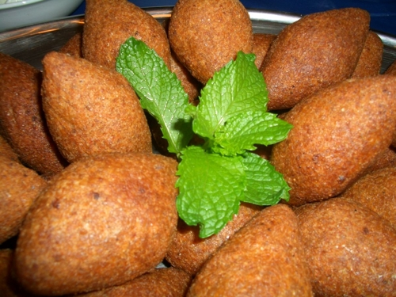

Home
Kibbeh

Description
Kibbeh is a family of dishes based on spiced ground meat,onions and grain,popular in many countries of West Asia.It is a mixture of bulgur wheat together with meat into a fine paste and forming into balls with toasted pine nuts and spices.
Ingredients
- 5 tbsp garam masala or allspice
- 2 tbsp turmeric
- 2 tbsp black pepper
- 2 tbsp cinnamon
- 1 tbsp paprika
- 1 tbsp coriander
- 1 tbsp cumin
- 1 tbsp cayenne pepper
Steps
- Soak the bulgur wheat in enough water to cover and set aside.
- To make the filling, sauté the chopped onions in regular olive oil until golden on medium low heat.
- Add 500g of minced meat to the onions and cook out the meat on medium high heat.
- Add the 7 spice, kamouneh spices, black pepper and salt and use the back of your wooden spoon to break up the meat.
- When it is cooked turn off the heat and add the sumac and chopped walnuts. Taste to make any adjustments then cover and set aside.
- Drain the bulgur wheat and add to a large bowl. Take out the kilo of meat and prepare food processor.
- In several batches, add the bulgur wheat and equal amounts of meat to the food processor and process until it clumps together and starts to roll in the processor bowl.
- Roughly chop 2 onions to go in the food processor along with the 7 spices, kamouneh spices, black pepper and salt (Blitz well).
- When you have combined all the meat and bulgur wheat in a bowl, add the blitzed onion spice mix and the cornflour, then bring everything together preferably with your hands.
- If it is too dry add a bit of water, you don't want it too loose, sticky or crumbly but so it holds together nicely. If you don't mind tasting a bit of raw meat check a tiny bit for saltiness and adjust as necessary.
- Add approx half a cup of sunflower to a small bowl which you can dip your fingers into when shaping the kibbeh to avoid sticking. Clean your table and arrange a workflow with a large clean tray, the sunflower oil, the filling and the casing mix.
- Take some casing and roll into golf ball size, indent the middle then hollow out the inside with your index finger turning as you do so until you have a half shell. Add a spoon of filling and close up the casing. Compress well with your hands and shape into classic kibbeh morsels.
- Line up the kibbeh on the tray until you finish the filling.
- Deep fry your kibbeh morsels in sunflower or vegetable oil and serve with yoghurt dip.
Notes
- To shape kibbeh first make an indent in a golf sized ball as you turn the kibbeh. Then once you have a hollow shell, add some filling and close it up by pinching and turning in your hands until smooth.
- For the meat, use a ratio of 50:50 lamb to beef but you can also do 70:30 depending on which you prefer.
- You can add extra lean lamb fat for a more rich taste.